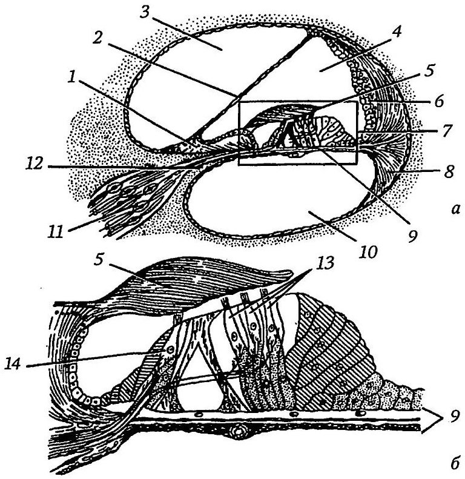

Внутреннее ухо
Пересказ по источнику: Гайворонский И. В., Гайворонский А. В., Ничипорук Г. И., Гайворонский А. И. Функциональная анатомия ЛОР-органов. — СПб.: СпецЛит, 2022. — С. 138–167 (PDF, с. 70–84).
Общее строение лабиринта
Внутреннее ухо (auris interna) расположено в пирамиде височной кости и состоит из двух частей, вложенных одна в другую. Снаружи лежит костный лабиринт, внутри него подвешен перепончатый лабиринт, повторяющий очертания костной капсулы. Анатомически лабиринт делят на улитку, преддверие и полукружные каналы. Улитка относится к слуховому анализатору, преддверие и полукружные каналы образуют орган равновесия.
Лабиринтная капсула ориентирована примерно по оси пирамиды. Спереди она граничит с каналом внутренней сонной артерии, сзади с сосцевидной пещерой, латерально с барабанной полостью, сверху со средней черепной ямкой, снизу с луковицей внутренней яремной вены. Медиальная поверхность обращена к задней черепной ямке, и именно здесь находится внутреннее слуховое отверстие.
Костный лабиринт
Преддверие (vestibulum) занимает центральное положение: спереди оно сообщается с улиткой, сзади с полукружными каналами. Его высота составляет 4–5 мм, ширина 3–4 мм, длина 5–6 мм. Гребешок преддверия разделяет два углубления: переднее, сферическое, и заднее, эллиптическое. На латеральной стенке расположены два окна. В овальное окно вставлено основание стремени, закреплённое кольцевой связкой, поэтому стремя смещается в нём подобно поршню. Круглое окно улитки закрыто тонкой вторичной барабанной перепонкой.
Костная улитка (cochlea) образует два с половиной или два и три четверти оборота вокруг конического стержня, называемого веретеном. От веретена в просвет улитки, как резьба винта, отходит костная спиральная пластинка шириной около 1 мм. В веретене проходят центральный и спиральный каналы; в спиральном канале лежат спиральная вена и улитковый (спиральный) узел. Ветви улитковой части нерва выходят через продырявленный спиральный путь на дно внутреннего слухового прохода.
Три костных полукружных канала лежат в разных плоскостях: передний, задний и латеральный. Названия «вертикальный» и «горизонтальный» условны, поскольку при вертикальном положении головы латеральный канал отклоняется от горизонтали примерно на 30°. Каждый канал одним концом расширен в костную ампулу, другим открывается простой ножкой. Простые ножки переднего и заднего каналов сливаются в общую, поэтому в преддверие открывается пять отверстий, а не шесть. Самым коротким является латеральный канал, самым длинным задний.
Перепончатый лабиринт и жидкости
Перепончатый лабиринт представляет собой замкнутую систему полостей. К нему относятся улитковый проток, два мешочка преддверия (сферический и эллиптический), три перепончатых полукружных протока, а также эндолимфатический проток с эндолимфатическим мешком. Внутри он заполнен эндолимфой, а пространство между перепончатым и костным лабиринтом занимает перилимфа. Соединительнотканные тяжи удерживают перепончатые структуры в перилимфе; непосредственно к кости они прилежат лишь на медиальной стороне мешочков и на вогнутой стороне полукружных каналов.
По составу перилимфа близка к спинномозговой жидкости и плазме: в ней много натрия и мало калия. Эндолимфа отличается резко: калия в ней много, натрия мало. Считают, что эндолимфу образует главным образом сосудистая полоска наружной стенки улиткового протока. Волосковые клетки кортиева органа омываются ещё одной жидкостью, кортилимфой, богатой натрием и отделённой от эндолимфы ретикулярной пластинкой. Объём перилимфы у человека около 78 мм³, эндолимфы около 3 мм³.
Нарушение ионного равновесия и давления в жидкостях внутреннего уха может приводить к расстройству слуха вплоть до его утраты. Автор связывает с этим механизмом кохлеарный неврит, старческую тугоухость и болезнь Меньера. Отток эндолимфы идёт по эндолимфатическому протоку, который начинается от мешочка и маточки и проходит в водопроводе преддверия (длина около 6 мм, диаметр около 0,25 мм). Достигнув твёрдой мозговой оболочки на задней поверхности пирамиды, он заканчивается слепым расширением между её листками, то есть эндолимфатическим мешком. Перилимфа оттекает по перилимфатическому протоку в водопроводе улитки (около 10 мм) в субарахноидальное пространство. Оба протока, как полагают, участвуют в регуляции гидравлического давления во внутреннем ухе.
![Рис. 68. Костный и перепончатый лабиринты (схема): 1 — перепончатая ампула; 2 — эллиптический мешочек; 3 — сферический мешочек; 4 — улитковый проток; 5 — общая перепончатая ножка; 6 — передний полукружный канал; 7 — передний полукружный проток; 8 — эндолимфатический мешок; 9 — твёрдая оболочка головного мозга; 10 — преддверие; 11 — улитка; 12 — лестница преддверия; 13 — барабанная лестница; 14 — перилимфатический проток; 15 — вторичная барабанная перепонка; 16 — стремя; 17 — латеральный полукружный проток; 18 — латеральный полукружный канал](img/tb-ukho-labirint.jpg)
Улитковый проток и спиральный орган
На поперечном срезе улитки видны три пространства. Срединная лестница, заполненная эндолимфой, и есть улитковый проток, имеющий треугольное сечение. Над ним лежит лестница преддверия, под ним барабанная лестница; обе содержат перилимфу и сообщаются на верхушке через геликотрему. Крышей протока служит преддверная (рейснерова) мембрана, дном основная (базилярная) мембрана, наружной стенкой спиральная связка с сосудистой полоской.
Спиральный (кортиев) орган лежит на базилярной мембране на всём протяжении протока. Он состоит из одного ряда внутренних и трёх рядов наружных волосковых клеток, а также опорных и столбчатых клеток, ограничивающих туннель. По данным книги, внутренних клеток около 3500, наружных до 2000. Над волосками нависает желеобразная покровная мембрана, отходящая от спирального лимба. На верхушке каждой клетки находятся около 50 коротких стереоцилий и одна длинная киноцилия.

Мешочки преддверия и полукружные протоки
Сферический мешочек (sacculus) занимает сферическое углубление, эллиптический мешочек, или маточка (utriculus), лежит выше и позади, над овальным окном. Мешочек соединяется соединительным протоком с улитковым протоком, а из его задней стенки выходит эндолимфатический проток. В маточку открываются все три полукружных протока пятью отверстиями. Рецепторные области мешочков называются пятнами (macula sacculi и macula utriculi) и вместе составляют отолитовый аппарат.
В пятне волоски сенсорных клеток погружены в желатинозную отолитовую мембрану, содержащую кристаллы карбоната кальция, плотность которых выше, чем у эндолимфы. При наклонах головы и линейных ускорениях мембрана смещается относительно пятна и меняет давление на волосковые клетки. Отолиты маточки лежат в сагиттальной плоскости и реагируют на наклоны вперёд и назад, отолиты мешочка лежат во фронтальной плоскости и реагируют на наклоны вправо и влево.
Каждый перепончатый полукружный проток примерно втрое уже костного канала и расширяется в ампулу. На дне ампулы находится ампулярный гребешок с волосковыми и опорными клетками; над ним расположена студенистая купула, без кристаллов и с той же плотностью, что и эндолимфа. Она перекрывает просвет ампулы подобно створке. При вращении головы купула смещается и натягивает волоски, поэтому полукружные протоки воспринимают угловые ускорения.
Внутренний слуховой проход и топографические связи
Внутренний слуховой проход начинается внутренним слуховым отверстием на задней поверхности пирамиды. Его передняя стенка имеет длину 13–14 мм, задняя 6–7 мм. Дно прохода служит медиальной стенкой преддверия и улитки и разделено поперечным гребешком на верхнюю и нижнюю части. Сверху расположены поле лицевого нерва и верхнее преддверное поле, снизу поле улитки и нижнее преддверное поле. Через многочисленные отверстия этих полей проходят ветви преддверно-улиткового нерва.
Из-за обилия отверстий дно внутреннего слухового прохода автор считает местом наименьшего сопротивления: через него инфекция при заболеваниях мозговых оболочек проникает в лабиринт. Таким же свободным сообщением служит водопровод улитки, соединяющий барабанную лестницу с подпаутинным пространством. Со стороны барабанной полости открытых путей в лабиринт нет, но опасными остаются окна преддверия и улитки, мыс и выступ латерального полукружного канала. Здесь стенка тонкая, и именно эти места служат главными путями распространения инфекции на лабиринт.
С выступом латерального канала связаны важные хирургические ориентиры. Он расположен над каналом лицевого нерва, отделённым от ампулы костной пластинкой толщиной около 1,5 мм, а от овального окна отстоит на 4,5 мм. От поверхности сосцевидного отростка до латерального канала не более 16–20 мм; превышение этой глубины при вмешательстве неизбежно ведёт к повреждению канала. Задний канал окружён верхним каменистым синусом, луковицей яремной вены, сигмовидным синусом и нисходящей частью канала лицевого нерва, а дуга его удалена от сигмовидного синуса на 6–7 мм.
Кровоснабжение лабиринта
Артерия лабиринта отходит от базилярной артерии и вместе с преддверно-улитковым нервом входит во внутренний слуховой проход, где делится на три ветви. Преддверная артерия проникает в лабиринт через решётчатые пятна и питает задние отделы мешочка и маточки, ампулы и ножки полукружных каналов. Улитковая артерия даёт три ветви: две снабжают основной завиток, одна средний и верхушечный. Преддверно-улитковая артерия входит в улитку через продырявленный спиральный путь и делится на улитковую и преддверную ветви; последняя питает нижний отдел улитки и задненижнюю часть преддверия.
Вены преддверия и полукружных каналов собираются в вену водопровода преддверия, которая впадает в поперечный или сигмовидный синус. Вены улитки образуют вену улиткового канальца, впадающую в нижний каменистый синус.
Физиология слуха
Слуховой анализатор воспринимает звук, проводит импульсы к центрам, анализирует поступившую информацию и позволяет определять направление, силу и тембр звука. Звуковая волна вызывает колебания барабанной перепонки и слуховых косточек, основание стремени передаёт их перилимфе лестницы преддверия, далее они переходят на барабанную лестницу, а вторичная барабанная перепонка передаёт колебания эндолимфе. Базилярная мембрана колеблется не целиком, а только там, где её резонанс совпадает с частотой волны. Низкие звуки возбуждают участки у верхушки улитки, высокие у основания.
Ухо человека воспринимает частоты от 16 до 20 000 Гц, для речи оптимален интервал 1000–4000 Гц. Раздражение волосков стереоцилиями меняет поляризацию клетки, и механическое воздействие превращается в нервный импульс. Первыми нейронами пути служат биполярные клетки улиткового узла (около 31 000 клеток). Их центральные отростки образуют улитковый корешок, идут через дно внутреннего слухового прохода к мосто-мозжечковому углу и заканчиваются в переднем и заднем улитковых ядрах.
Вторые нейроны лежат в улитковых ядрах, третьи в ядрах трапециевидного тела, аксоны которых образуют латеральную петлю. Её волокна достигают нижних холмиков среднего мозга и медиальных коленчатых тел, меньшая часть заканчивается в срединных ядрах таламуса. От медиального коленчатого тела слуховая лучистость проходит через заднюю ножку внутренней капсулы к средней части верхней височной извилины. Поскольку лишь небольшая часть волокон идёт по своей стороне, информация поступает в кору преимущественно с противоположной стороны. Поражение кортиева органа, улиткового нерва или улитковых ядер вызывает одностороннюю глухоту, поражение латеральной петли, медиального коленчатого тела или коркового центра ведёт к снижению слуха на оба уха.
![Рис. 75. Проводящий путь слухового анализатора (схема): 1 — спиральный орган; 2 — улитковый узел; 3 — улитковая часть преддверно-улиткового нерва; 4 — переднее улитковое ядро; 5 — заднее улитковое ядро; 6 — мозговые полоски IV желудочка; 7 — верхняя височная извилина; 8 — слуховая лучистость; 9 — внутренняя капсула; 10 — медиальное коленчатое тело; 11 — нижний холмик; 12 — латеральная петля; 13 — ядра латеральной петли; 14 — заднее ядро трапециевидного тела; 15 — переднее ядро трапециевидного тела; 16 — трапециевидное тело](img/tb-ukho-put.jpg)
Физиология равновесия и вестибулярные пути
Вестибулярный анализатор вместе с двигательным, кожным и зрительным обеспечивает равновесие тела и ориентацию в пространстве. Клетки ампулярных гребешков реагируют на угловые ускорения, клетки пятен мешочка и маточки на линейные ускорения и положение относительно силы тяжести. Тела первых нейронов лежат в преддверном узле, состоящем из верхней и нижней частей. Центральные отростки образуют преддверный корешок, который во внутреннем слуховом проходе соединяется с улитковым нервом, а в мосту заканчивается в четырёх вестибулярных ядрах: верхнем (Бехтерева), медиальном (Швальбе), латеральном (Дейтерса) и нижнем (Роллера).
От ядер идут пути в спинной мозг (преддверно-спинномозговой путь для рефлекторного поддержания равновесия), в мозжечок и в составе медиального и заднего продольных пучков. Связи с ядрами глазодвигательных нервов и мышц шеи позволяют удерживать направление взгляда при поворотах головы. Связь ядра Дейтерса с вегетативными ядрами объясняет тошноту, рвоту, побледнение, учащение перистальтики, урежение пульса и снижение артериального давления при чрезмерном раздражении вестибулярного аппарата. Сознательная оценка положения головы осуществляется в коре средней и нижней височных извилин, куда импульсы идут через преддверно-таламический тракт и центральные ядра таламуса.
Источники
- Гайворонский И. В., Гайворонский А. В., Ничипорук Г. И., Гайворонский А. И. Функциональная анатомия ЛОР-органов. — СПб.: СпецЛит, 2022. — С. 138–167 (PDF, с. 70–84).
Раздел «Учебник» — справочная теория, не клинические рекомендации. Тактика ведения пациента — по разборам КР.